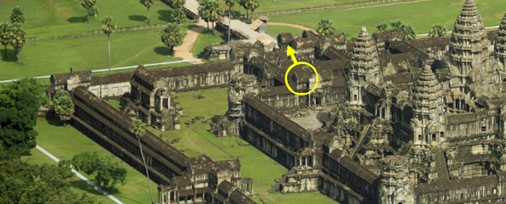

|
Step 1: Intro | Step 2: Brush/Pencil | Step 3: Spot Healing Brush | Step 4: Healing Brush | Step 5:
Patch | Step 6: Content-Aware Move | Step 7: Content Aware Fill | Step 8: Clone
| Step 9: Combining Tools |
| Combining Tools |
Now that you have experience with all of the removal techniques, it's time for some bad news. While making simple changes like removing a small person from a large image can be accomplished easily with just one of the tools, removing larger, more complicated objects is often more difficult and requires the use of multiple tools. Have a look at the image below...
You can click the above image to get the full-sized version.
Specifically look at the area below...
If we want to remove the construction and make it look like this...
We have to combine the use of several tools. For example, to replace this area...
I used the Content-Aware Move Tool to copy the part of the building circled below over to where the arrow is pointing...
I used the Clone Tool with a hard edge brush to clone the grass and make the edge along the top of the building.
For this area...
I copied the roof cap circled below and copied it to where the arrow is pointing
...
I used the Close Tool to create a small area of lighter roof material so that it was not obvious where the roof cap came from. I used the Spot Healing Brush and the Healing Brush to remove the fences and tarps.
For the area below...
I used the Patch Tool to replace the tarp with another section of the roof. I used a variety of other methods around the image to remove the people and other parts of the construction. The point here is to recognize that while one tool will work for small jobs, larger jobs often require the use of multiple tools.
As you can see, being familiar with the various removal techniques in Photopea has served us well on this image.
We have made multiple changes to our Colosseum image at this point, so let's finish removing all of the people and objects around the building. Your task is to use whatever technique works best to remove the rest of the people, cars, kiosks, lamp posts, barricades, and anything else until your image looks like this...
Don't worry about your image being perfect. I completely understand that your are using most of these tools for the first time and are not an expert with them. Just do the best you can and try to end up with something similar to what you see above (not including the watermark of my name, of course, which is there to make sure none of you try to just save the above image pass it off as your work). It is up to you to decide which of the methods we covered will work best (and be most efficient!) on each individual object to remove it.
When you have removed all objects and are happy with your image, save your file.
We now need to save a version of our Colosseum image that we are going to submit to be graded.
Congratulations, you finished the tutorial! You are now a complete and total expert at removing objects from images. Your next task is to complete the Removing Objects Exercise, where you will select an aerial photo and remove the people and objects in it to make the location look abandoned. Click the link below to go to the Exercise.
|
Step 1: Intro | Step 2: Brush/Pencil | Step 3: Spot Healing Brush | Step 4: Healing Brush | Step 5: Patch | Step 6: Content-Aware Move | Step 7: Content Aware Fill | Step 8: Clone | Step9: Combining Tools |
{kind=link}